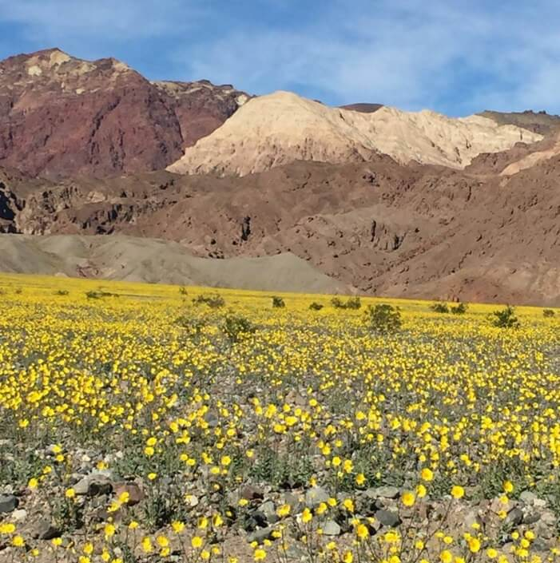

Долина Смерти на территории США – наибольший парк в районе пустыни Мохаве и самое жаркое место на Земле. Ее площадь занимает 13 628 кв. Это почти как вся Черногория. км. А каменные образования существуют около 500 миллионов лет.
Здесь находится самая низкая точка в США и всей Северной Америке - Бэдуотер - высохшее озеро: на 86 метров ниже уровня моря. Когда-то один из исследователей Долины Смерти хотел напоить своего мула в местной луже, но тот не захотел пить. Исследователь сделал на своей карте пометку "плохая вода" (bad water), так это название и прижилось.
Своё название Долина Смерти получила в 1849 году во время калифорнийской золотой лихорадки - золотоискатели искали короткий путь в Калифорнию. В 1850-е годы здесь добывали золото и серебро. Почему Долина Смерти так названа? В 1849 году две группы золотоискателей на ста фургонах пытались найти короткий путь в Калифорнию. Они думали найти старую испанскую тропу, но в итоге блуждали по долине неделями и не могли найти из нее выход. Им повезло найти воду, но пришлось съесть часть быков и разломать часть фургонов, чтобы приготовить еду. Сегодня это место называется Burned Wagons Camp (Лагерь Сожженных Фургонов). Они решили оставить повозки и смогли выйти из долины пешком. Когда они нашли выход, одна из женщин обернулась и сказала: "Прощай, Долина Смерти!", и так это название и прижилось.
В Долине Смерти есть несколько мест с настоящими песчаными дюнами, самое известное — Стоувпайп-Уэллс (англ. Stovepipe Wells).
Одна из загадок, не менее полувека привлекающих внимание к Долине Смерти — знаменитые движущиеся камни (Sailing stones). На дне сухого озера Рейстрэк-Плайя (Racetrack Playa) обнаружены камни, ползущие по поверхности и оставляющие за собой следы на глине. Вес некоторых камней доходит до сотен килограммов. Камни приходят в движение всего один раз за два или три года, а следы сохраняются несколько лет.
Почему двигаются камни в Долине Смерти? Ответ на этот вопрос пытались найти несколько веков. Еще до начала XX века феномен объяснялся сверхъестественными силами, а также действием магнитных полей. Научное объяснение пытались найти в 1940 – 1950-х годах. Большинство концепций было связано с сильным ветром. Но некоторые камни слишком тяжелые, чтобы перемещаться только благодаря воздушному потоку.
После долгих лет исследований и экспериментов ученым все-таки удалось найти ответ. В 2014 году, снабдив несколько валунов навигационными датчиками и фотокамерами, исследователи зафиксировали причину движения камней в Долине Смерти. В морозные ночи образовывались большие, но тонкие участки льда. За счет ветра и подледного течения камни двигаются в разные стороны, оставляя за собой следы в несколько десятков метров. Иногда камни могут перевернуться и резко поменять направление движения.
Иногда и в самых безжизненных местах можно увидеть торжество жизни.

Если вам повезет, в Долине Смерти вы сможете встретить весьма примечательного обитателя. Эту не очень большую птицу по-русски называют калифорнийской земляной кукушкой или кукушкой-подорожником, но более всего она известна под своим американским прозвищем дорожный бегун (Road runner). Может быть вы видели американский мультсериал студии Уорнер Бразерс «Хитрый койот и Дорожный бегун» (Wile E. Coyote and The Road Runner), в котором незадачливому койоту никак не удается догнать и схватить шуструю птичку.
Бегун действительно быстро бегает и мможет развивать скорость до 42 км/ч. «Дорожным» его назвали еще во времена почтовых карет за необычный способ кормления. Птица сопровождала кареты, ловя по дороге небольших животных, потревоженных колесами.
ВВЕРХ